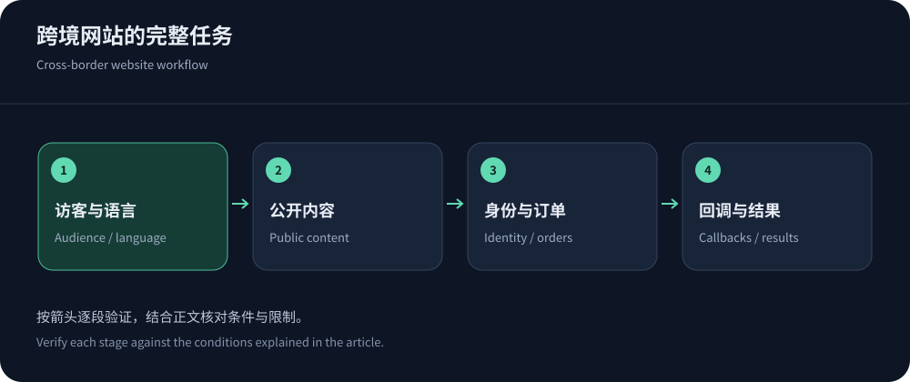
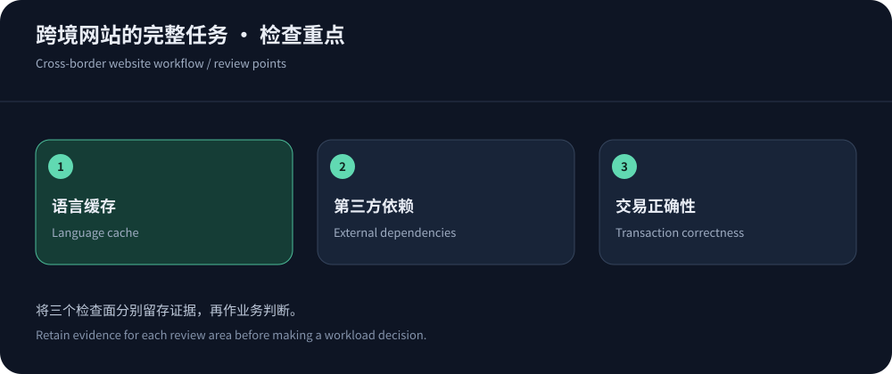

跨境网站的问题，往往不止一个慢首页
跨境电商或企业站可能有多个语言版本、全球访客、不同支付服务与位于单一区域的数据库。CDN能让公开页面和素材靠近用户，但订单、库存与身份仍依赖后台。选择免备案CDN时，应从完整访问流程开始：访客从哪里来，看到哪种语言，在哪个接口提交，失败后由谁处理。仅测试首页会漏掉最影响转化的环节。
若业务需要境外节点和中文安全支持，可优先评估CDN5；若已有完整云平台，则同时比较与源站和权限体系匹配的产品。这里的推荐依据是部署与运维适配，没有虚构跨境网站的销售提升数据。资料核实于2026年10月14日，具体费用和地区能力仍应以有效订单为准。
先画业务依赖，再选节点地图
将浏览器、边缘、源站、数据库、支付与第三方API放在一张图中，标出每次跨区域交互。一个页面可能由香港边缘快速返回，却等待欧美接口完成登录；也可能因第三方字体或分析脚本阻塞。CDN只能改善它实际参与的路径，无法让不经过它的服务自动变快。排查时需要区分自己的可控项与外部依赖。
按用户所在市场和收入或访问贡献选择试点地区，同时覆盖较差网络和移动设备。语言不等于地区，中文用户也可能在海外，英文用户也可能在亚洲。域名、语言路径和内容版本应保持清晰，以便同时处理缓存与搜索引擎索引。上线加速不应顺手改动所有URL结构，否则性能迁移会与内容迁移混在一起。


多语言缓存最怕“看起来都是同一个页面”
同一URL若根据Cookie、请求头或地理位置输出不同语言和货币，缓存键必须反映影响内容的维度，或者避免共享该响应。否则用户可能收到错误价格、地区条款甚至他人的账户内容。更容易检查的做法，是让公开语言版本具有稳定路径，再明确哪些个性化数据由不可共享的接口返回。具体方案取决于应用，不能只在CDN控制台勾选缓存所有内容。
依据RFC 9111处理缓存语义，并参考CloudFront缓存键策略审查Cookie、头和查询参数。营销参数可以在证明不影响内容后减少碎片；购物车、登录态和授权信息则不能为了命中率被忽略。验收时使用不同语言、身份与货币组合，并验证清理缓存后结果仍正确。
选择运营模式：区域服务还是全球平台
区域方案适合明确的访问市场与支持需求，全球平台适合更广用户和统一配置，但二者都需要检查实际产品边界。CDN5与JQCDN可用于比较境外安全和香港线路定位；Azure Front Door则提供全球入口、源站组等架构思路，适合与现有云部署一起评估。不要把某一模式简单称作所有跨境业务的最佳方案。
比较控制台之外，还要看配置导出、权限分工、日志、证书自动化和变更审计。小团队可能更需要易于求助与少量可解释规则，大团队则可能需要接口管理和审批。功能多并不一定省人力，团队维护不了的策略容易在人员变更后失效。选择产品，也是在选择未来几年处理故障的工作方式。
跨市场发布，要同时检查页面和依赖
发布新语言页面时，同步确认图片、字体、翻译接口、隐私说明和支付入口。某个市场页面可以打开，不代表其引用资源也在同一路径或具备相同授权。把依赖域名列入验收，检查跨域、证书和缓存。观察更新后的真实用户任务，避免把缓存旧页面的成功访问误认为新版本已经全球生效。
跨境交易的安全例外要经过验证
支付回调、物流接口和合作方API通常不是普通浏览器。挑战页面、过严IP限速或缓存错误可能让关键业务失败，即使首页仍返回成功。对回调使用签名、时间有效性、幂等和可追踪日志；对登录与下单分别制定策略。不能因为某个User-Agent声称是支付服务就永久放行，也不能为了避免误报关闭整个站点的防护。
在CDN之外，源站入口应收紧到可信回源和运维路径，管理端独立控制。公开素材可以缓存，订单和身份隔离必须由应用与边缘共同验证。故障演练应覆盖重复回调、超时后重试和备用入口，并确认不会重复扣款或漏单。相关检查可沿网站高防选型进一步展开。
迁移计划应同时包含回退与退出
把证书、回源Host、健康检查、缓存、日志和告警准备好，再用小范围访问验证。切换前保存旧配置，确认旧入口仍安全可用；切换中观察真实业务成功率，而不只看请求数是否转移。缓存预热要控制范围，避免迁移当天把所有对象重新拉回源站。DNS调整影响后续解析，现有会话还需要客户端恢复机制。
Cloudflare中国网络条件提醒我们，进入大陆节点可能是另一项产品与资格变更。跨境业务扩区时，应重新检查节点、数据流和合同，不要把原来的境外部署条件直接复制。退出时导出配置与日志、撤销旧授权、更新允许列表，并验证剩余资源不再持续收费。


运营指标要能解释增长，也能解释失败
分别追踪地区、语言、设备和业务路径的成功率、尾延迟与成本。某市场增长可能提高出网账单，却同时增加收入；某种自动化访问则可能只增加请求和回源。两者不能仅凭流量曲线区分，需要结合业务事件和安全日志。对费用异常设置负责人和处理期限，避免月末才发现配置绕过缓存。
试点报告应记录未覆盖的地区和客户端，而不是用“全球加速”代替所有未知项。选择结果可以保留两个不同模式的候选，按明确硬条件决定，不必强行排出绝对冠军。更多费用比较见免备案CDN价格与功能。真正成熟的跨境方案，是用户路径、数据正确性和运行成本都能被团队解释。